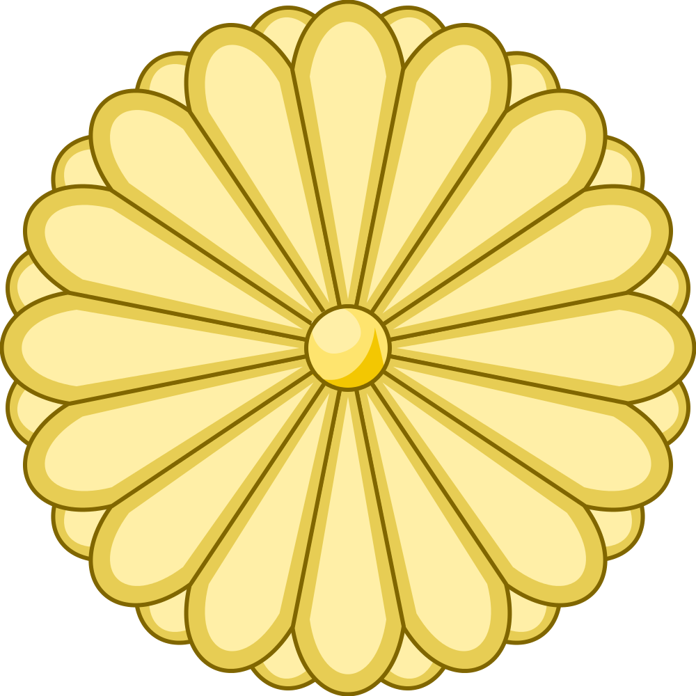
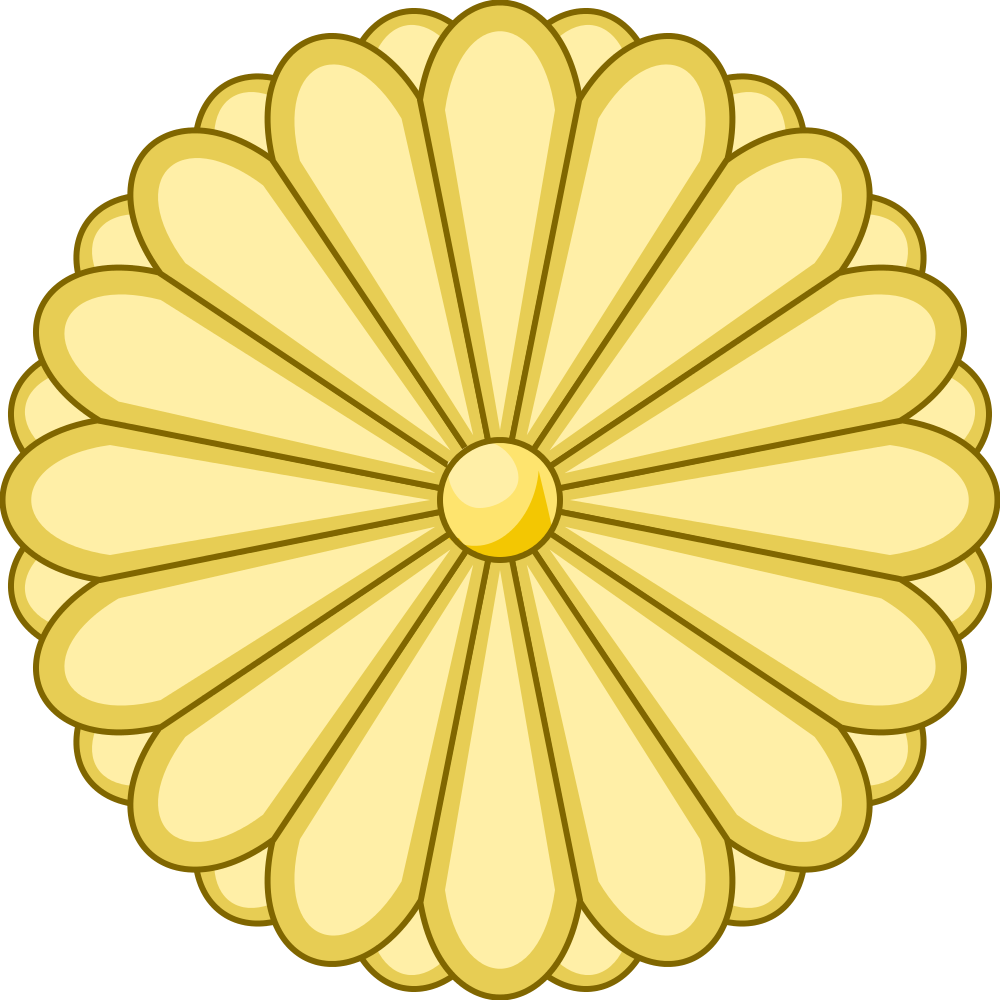
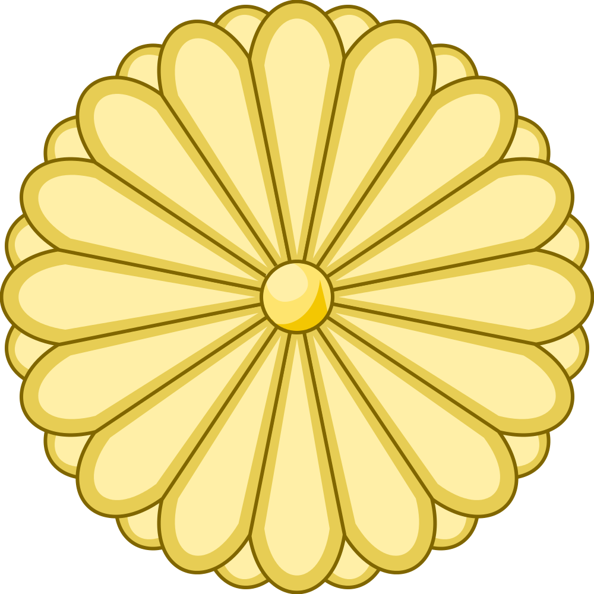

Ճապոնիա
 

- Մայրաքաղաքը՝ Տոկիո
- Պետական լեզու՝ Ճապոներեն
- Բնակչությունը՝ մոտ 125 մլն․

Montbell ապրանքանիշի պատմությունը սկսվել է 1975 թվականի օգոստոսի 11-ին Ճապոնիայում՝ նպատակ ունենալով արտադրել որակյալ ճամբարային սարքավորումներ։ Առաջին ապրանքանիշի արտադրանքը քնապարկերն ու անձրեւանոցներն էին։ Այն ժամանակ, երբ սովորական սինթետիկ քնապարկերը ծանր ու ծավալուն էին, Մոնբելը սկսեց օգտագործել DuPont's Dacron պոլիեսթեր մանրաթելերը:
Սնամեջ թելով լցոնումը թույլ տվեց ընկերությանը արտադրել քնապարկ, որն ավելի թեթև և կոմպակտ էր, քան ժամանակի մյուս անալոգները: Ընկերությունը սկսեց նորամուծություններ կատարել DuPont-ի Hypalon ծածկույթի միջոցով՝ ստեղծելով ավելի թեթև անձրևանոցներ՝ բարձր ջրամեկուսացումով և դիմացկունությամբ:
Casio-ն հիմնադրվել է 1946 թվականին Տոկիոյում գործընթացի ինժեներ Տադաո Կասիոյի կողմից: Casio ապրանքանիշը նորարար է շարժական էլեկտրոնիկայի շուկայում, մասնավորապես՝ էլեկտրոնային հաշվիչներ: 1957 թվականին Casio-ն թողարկեց աշխարհում առաջին ամբողջովին էլեկտրական հաշվիչը, ինչպես նաև աշխարհում առաջին համակցված տեսախցիկը և ձեռքի ժամացույցը:
1974 թվականին ընկերությունը մշակեց Casiotron-ը՝ առաջին հավերժական օրացուցային ժամացույցը: 1980 թվականին ընկերությունը սկսեց երաժշտական գործիքների մշակումը Casioton թվային դաշնամուրի թողարկմամբ։ 1980 թվականին Casio-ն սկսեց աշխատել G-Shock շարքի ձեռքի ժամացույցների արտադրության վրա։ Ապրանքի մշակումը տևեց 2 տարի, աշխարհում առաջին G-Shock ժամացույցը թողարկվեց 1982 թվականին:
2015 թվականին Casio ապրանքանիշը սկսեց վաճառել նոր ժամացույցներ Edifice շարքից, որոնք համատեղելի են iPhone-ի հետ Bluetooth-ի միջոցով: Մինչև 1996 թվականը ոչ ճապոնական արտադրության մասնաբաժինը բարձրացավ մինչև 80%: Այսպիսով, ընկերության արտադրական օբյեկտները հիմնված են Թայվանում, Հոնկոնգում, Սինգապուրում, Մալայզիայում, Թաիլանդում, Կորեայում, Չինաստանում, Հնդկաստանում, ԱՄՆ-ում և Մեքսիկայում։
Uniqlo ապրանքանիշի պատմությունը (կրճատ՝ Unique Clothing Warehouse) սկսվել է 1948 թվականին Ուբե քաղաքում (Ճապոնիա) տղամարդկանց հագուստի փոքրիկ խանութից։ 1984 թվականին երկրորդ Uniqlo խանութը բացվեց Հիրոսիմայում, որին հաջորդեց երրորդ խանութը Տոկիոյում 1998 թվականին։ Բրենդը ճանաչված է որպես «No 1 Casual Wear Brand» ոչ միայն Ճապոնիայում, այլեւ Չինաստանում եւ Հարավային Կորեայում։
Որպես համաշխարհային կարգի ապրանքանիշի իր համբավն ամրապնդելու ջանքերով՝ UNIQLO-ն շարունակում է մեծ խանութներ բացել խոշոր և ռազմավարական կարևոր քաղաքներում. այսօր կան ավելի քան 2000 UNIQLO խանութներ ամբողջ աշխարհում, այդ թվում՝ Ռուսաստանում: Ռուսաստանում առաջին Uniqlo խանութը բացվել է 2010 թվականին Մոսկվայի առևտրի կենտրոններից մեկում։ 2017 թվականի հուլիսի դրությամբ ճապոնական հագուստի խանութների ռուսական ցանցը բաղկացած էր 19 վաճառակետից։
Hitachi ապրանքանիշի պատմությունը սկսվել է 1910 թվականին ճապոնական Hitachi քաղաքում։ Սկզբում ընկերությունը զբաղվում էր տրանսֆորմատորների և էլեկտրական շարժիչների արտադրությամբ։ 1924 թվականին, հիմնվելով սեփական նախագծերի վրա, Hitachi-ի ինժեներները ստեղծեցին Ճապոնիայի առաջին հիմնական ցամաքային AC լոկոմոտիվը: 1932 թվականին Hitachi-ի պատմությունն իր շարունակությունը գտավ սառնարանների արտադրության մեջ։ Ընկերությունը թողարկել է առաջին Hitachi էլեկտրական սառնարանը։
1968 թվականին սկսվեց Hitachi շինարարական սարքավորումների պատմությունը։ 1970 թվականին Hitachi-ն վերակազմավորեց ընկերության գործունեությունը Ճապոնիայում, իսկ 1972 թվականին ստեղծվեց նոր ընկերությունը՝ Hitachi Construction Machinery, որը կենտրոնացավ հիդրավլիկ սողացող էքսկավատորների գծի արտադրության և զարգացման վրա։ 1986 թվականին Fiat-ի և Hitachi-ի միջև արտադրական համագործակցություն է ձևավորվել: Fiat-Hitachi-ի համատեղ արտադրության առաջին էքսկավատորը Հոլանդիա է առաքվել 1988 թվականին:
1998 թվականին առաջին Hitachi էքսկավատորը ներմուծվեց Ռուսաստան, իսկ 2011 թվականին Ռուսաստանում սկսվեց առաջին Hitachi գործարանի շինարարությունը՝ էքսկավատորների համար բոմերի և շրջանակների արտադրության համար։ Ռուսական Hitachi Construction Machinery գործարանը շահագործման է հանձնվել 2013 թվականի դեկտեմբերին։ 2015 թվականին գերմանական Metabo ընկերությունը դարձավ Hitachi Koki Co., Ltd.-ի մաս:
Toshiba-ի պատմությունը սկսվել է 1938 թվականին, երբ գրանցվեց Tokyo Shibaura Electric K.K. 1939 թվականին Shibaura Seisakusho-ի հետ միաձուլվելուց հետո ստեղծվեց Tokyo Shibaura Denki-ն, իսկ 1978 թվականին կորպորացիայի պաշտոնական անվանումը փոխվեց Toshiba Corporation-ի։ Այսօր Toshiba-ն սպառողական էլեկտրոնիկայի արտադրության առաջատարներից է, որի մշակումն իրականացվում է Ճապոնիայի խոշորագույն հետազոտական կենտրոնում։
Ժամանակակից էլեկտրոնիկայի և սարքավորումների գրեթե բոլոր տեսակներն արտադրվում են Toshiba ապրանքանիշի ներքո՝ համակարգչային բաղադրիչներից, աուդիո և վիդեո սարքավորումներից մինչև կենցաղային տեխնիկա: Toshiba-ն ռուսական շուկայում հայտնի է 2001 թվականից՝ Toshiba-ի առաջին ռուսական ներկայացուցչության բացմամբ: Ընկերությունը ռուսական նոութբուքերի շուկայում վաճառքի ծավալով մշտապես զբաղեցնում է երրորդ տեղը (Acer-ից և Asus-ից հետո): Որոշ Toshiba հեռուստացույցներ արտադրվում են ռուսական գործարաններում: